Potatoes
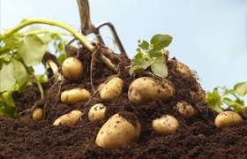
Potatoes are such a versatile veggie, both in the kitchen and in the ground. You can
harvest new potatoes within six to eight weeks of planting or opt for later harvest
varieties that you can enjoy right through early frosts. You can also grow them in a
pot right on a sunny balcony or patio
When to plant: Mid March through early May, depending on your location
Onions
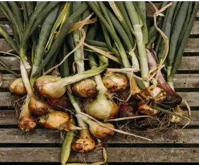
It's hard to think of a more useful cooking ingredient than an onion, so why not grow
them yourself? You can plant them in the spring for a harvest in the mid to late
summer, depending on your climate. You can also plant them in the fall instead so
they will be dormant all winter and pop up in spring
When to plant: Late March to early April, when the temperatures won't dip below 28°F.
Okra[ladiesfinger]
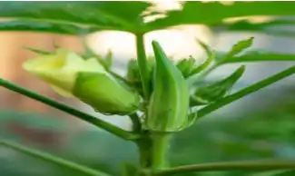
Though more popular in southern recipes because most varieties like warm weather,
there are versions of okra that grow just as well in chillier northern climates. Okra
grows fast and often and the blooming flowers look like pretty hibiscus! You'll love to
look at and eat them all summer long.
When to plant: Late April or early May in southern climates for a summer crop or
early August for a fall harvest. June is best for northern climates.
Turnips
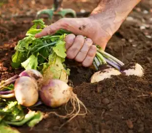
An underrated cool-weather vegetable, the turnip makes a great alternative to
carrots and potatoes in many recipes. Plus, you can eat both the green tops and the
root vegetable, making them doubly delicious!
When to plant: A few weeks before the predicted last spring frost date for late
spring harvest, late summer for a fall harvest, or early fall for a late fall harvest.
Pumpkins
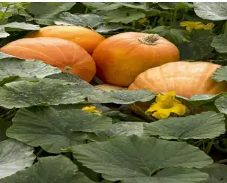
If you're debating whether to grow pumpkins in your garden, we have just two
words for you: pumpkin pie. You'll need a lot of space and a long growing season for
this winter squash but we like to say, if you've got it, plant it!
When to plant: Well after danger of frost is past and the soil is between 65° and
95°F.
Cabbage
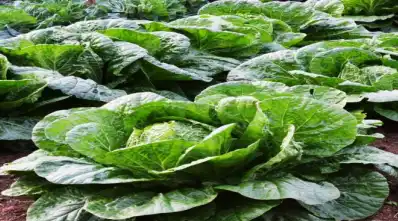
This hardy, leafy vegetable thrives with 6 to 8 hours of direct sunlight per day so be
sure to save a sunny spot in your garden if you plan to grow cabbage. Start sowing
your seeds indoors for a summer harvest.
When to plant: About 6 to 8 weeks before the last spring frost for a summer harvest.
Carrots
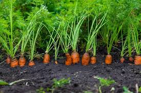
Did you know carrots taste even sweeter when they're fresh from the garden? That's
just one of the many reasons to start growing this colorful root vegetable at home.
Carrots can be a tricky plant, but if you use mulch and remember to keep the soil
well-watered during hot spells, you should have lots of luck!
When to plant: About 2 to 3 weeks before the last spring frost date.
Lettuce
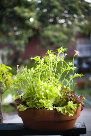
Gourmet greens often get icky fast in the fridge. Instead of picking them up at the
store, plant your own and you can harvest some leaves right before dinner. Lettuce
likes cool weather and grows well when planted as seeds. It’s also a great choice for
planting in pots and window boxes because the roots are shallow. Keep the plant
moist as the seeds sprout, then harvest when leaves are a few inches long. If you like
variety, choose a mesclun mix which includes several different types of lettuce in one
seed packet.
When to plant: Early spring or late summer for a fall harvest.
Tomatoes
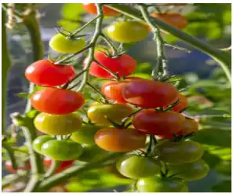
You can grow heat-loving tomatoes from seed, or if you prefer, you can choose
transplants, which you’ll find at local nurseries or online. Pay attention to what type
you’re buying: Indeterminate types keep growing and producing until a frost, so their
sprawling vines need to be staked—this means they’re not great in containers
because they get top-heavy. Determinate types have fruit that ripens in a short
period of time—they'll stay about three to four feet tall. Cherry tomatoes are best
for beginners, and many new varieties stay nice and compact so they’re ideal for
planting in containers.
When to plant: After all danger of frost is past.
Beans
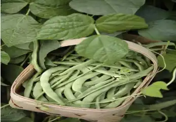
Beans come in tons of varieties, and they’re prolific (plus, the more you pick, the
more they produce!). Sow seeds directly in the ground because transplants don’t
usually do well. Look for pole beans, which need plenty of space and a trellis to
climb, or bush beans, which grow in a more compact form, so they'll work in
containers. Read the seed label to find “days to maturity” so you know when to
harvest specific types—you don’t want to wait too long because they’ll get tough.
When to plant: After the last frost
Herbs
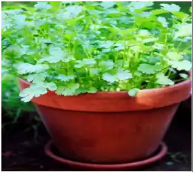
Even if you only have a tiny balcony, you can still grow fresh herbs! It’s so much fun
to snip off a few leaves for every meal, and it’s much cheaper than buying those
pricey packages at the store. Herbs grow equally well in containers or beds. You can
grow most from seed, but if you’re in a hurry, they’re not super-expensive to
purchase as transplants. Better yet, some herbs, such as chives, sage, and thyme, are
perennial and will return next spring.
When to plant: Mid-spring.
Cucumbers
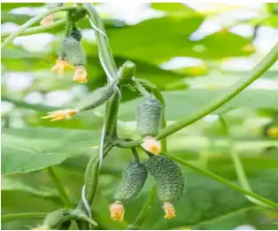
Most cucumber types are heat-loving vines, so you'll need some space to grow them.
You also can provide a cage or trellis for them to climb vertically, which will take up
less room in your garden. Look for round, yellow, miniature, or compact varieties. It’s
best to plant seeds directly in the ground as transplants can be fussy.
When to plant: After all danger of frost is past.
Eggplant
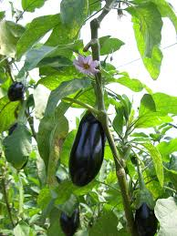
Eggplant is a heat lover, and newer types are more compact and bushy so they can
be planted in containers or beds. Look for fun varieties that produce long, slender, or
even ball-shaped eggplants. Keep in mind that most need will need staking. It’s best
to use transplants unless you’ve started these indoors about eight weeks before the
last frost.
When to plant: After all danger of frost is past
Peas
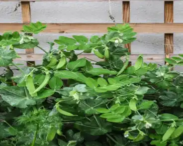
Peas prefer chilly weather, so if you get peas in the ground too late, they’ll often
grow but won't produce. As soon as the ground can be worked, it’s fine to plant pea
seeds. Give them something to climb, and plant successive rows so you’ll be able to
harvest them for a few weeks before it gets too hot and the plants fade. And one last
tip: After you yank out the spent peas, plant a different crop in that space to finish
out the growing season.
When to plant: Early spring.
Spinach
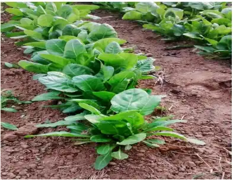
Spinach is another cool weather lover, so plant these seeds as soon as the ground
can be worked—they don't even mind light frost! But don’t procrastinate: If you sow
it too late in the season, it will “bolt” or go to seed in a hurry. If you live in a hot
climate, look for more heat-resistant varieties. Pinch off baby leaves from the
outside, or let it mature to use for sautéing or in salads.
When to plant: Early spring.
Garlic
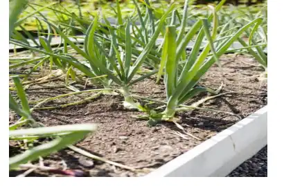
You won’t believe how easy garlic is to grow until you try it! It’s one of the first things
to pop up in early spring. There are two basic types. First is softneck, which consists
of many cloves and stores longer. The second is hardneck, which produces curly
“scapes” you can harvest in late spring, then bulbs in mid-summer. Plant individual
cloves of bulbs in the ground with the pointy-side up in fall. By late spring or early
summer of the following year, it’ll be ready to harvest when the greenery has turned
yellow and flopped over.
When to plant: Mid to late fall before the ground freezes.